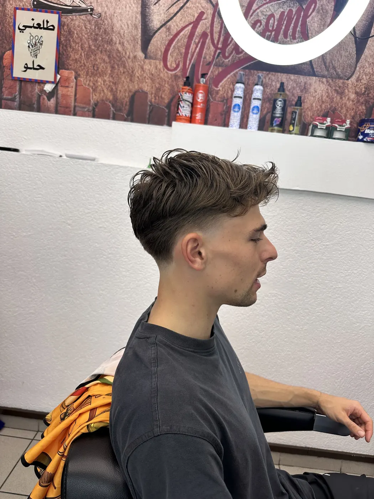
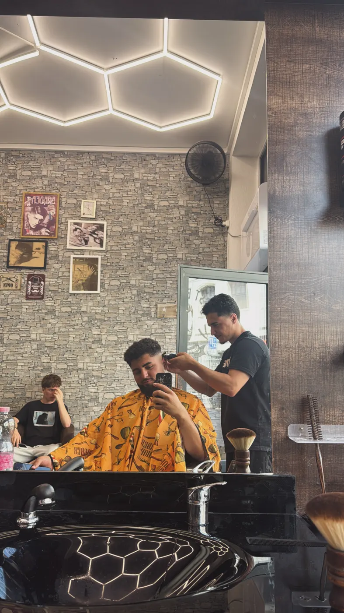
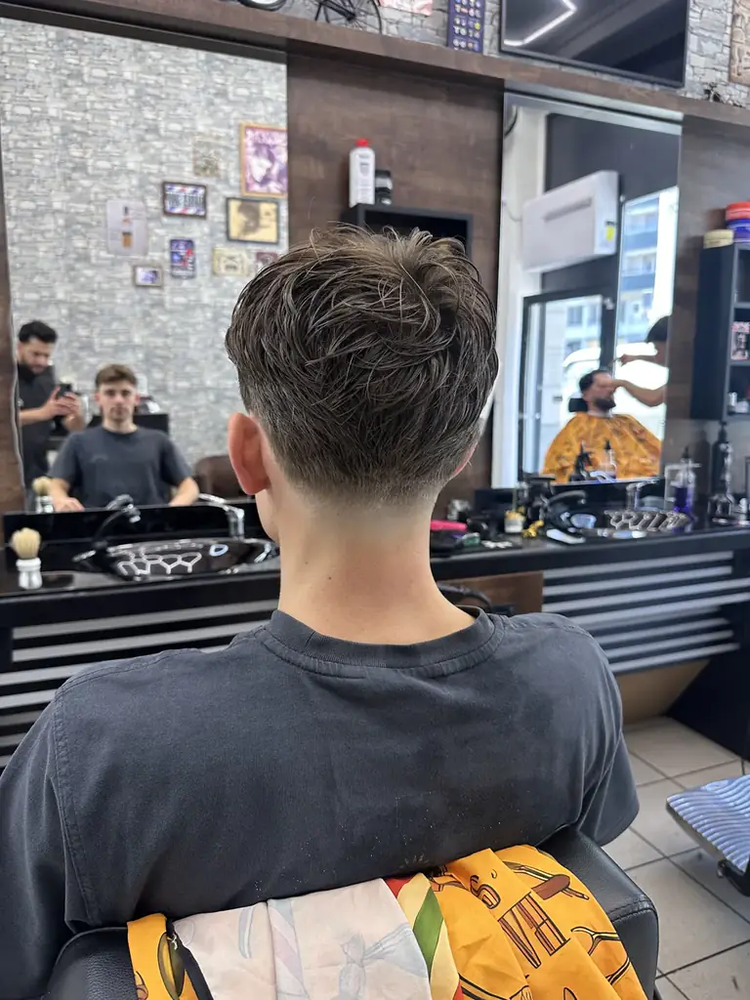
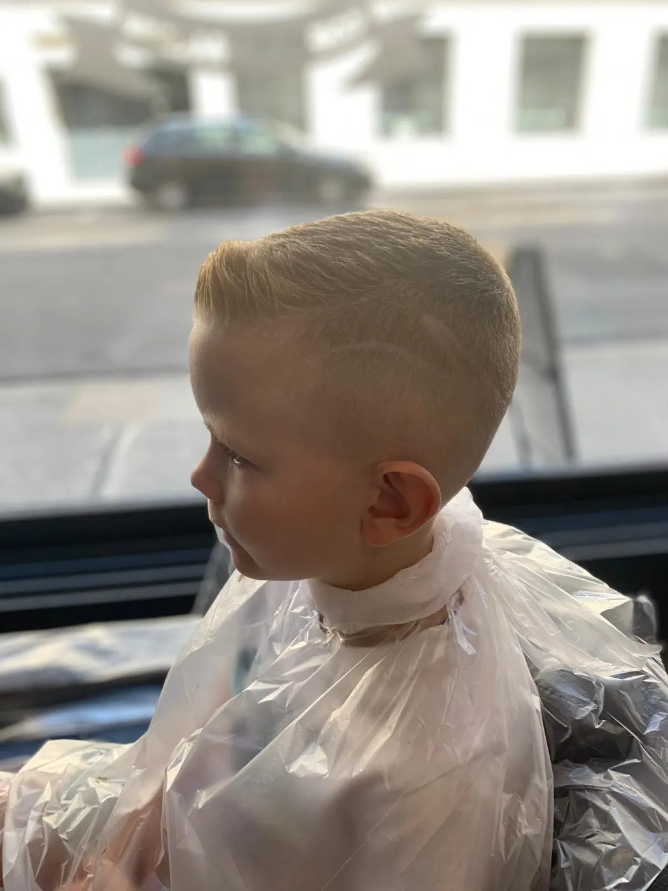
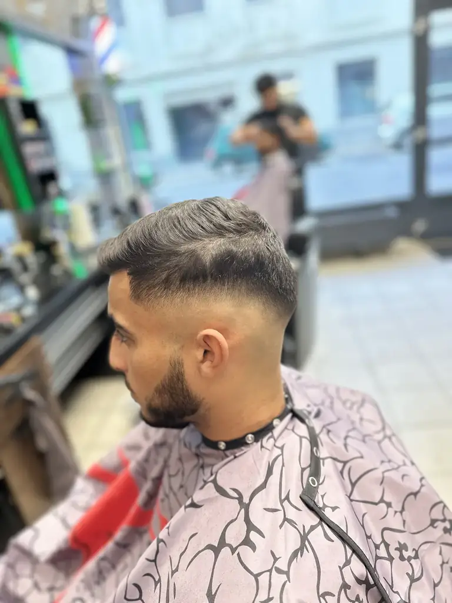
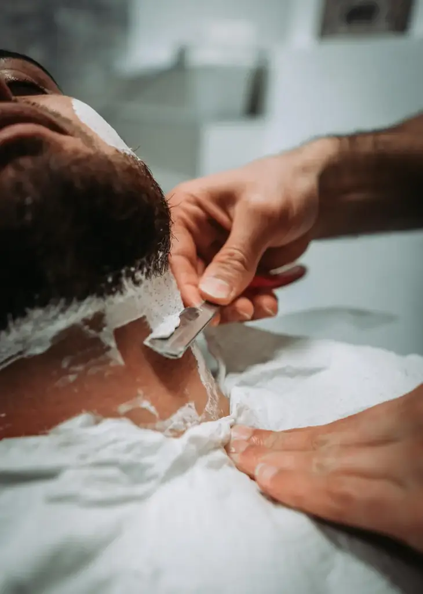
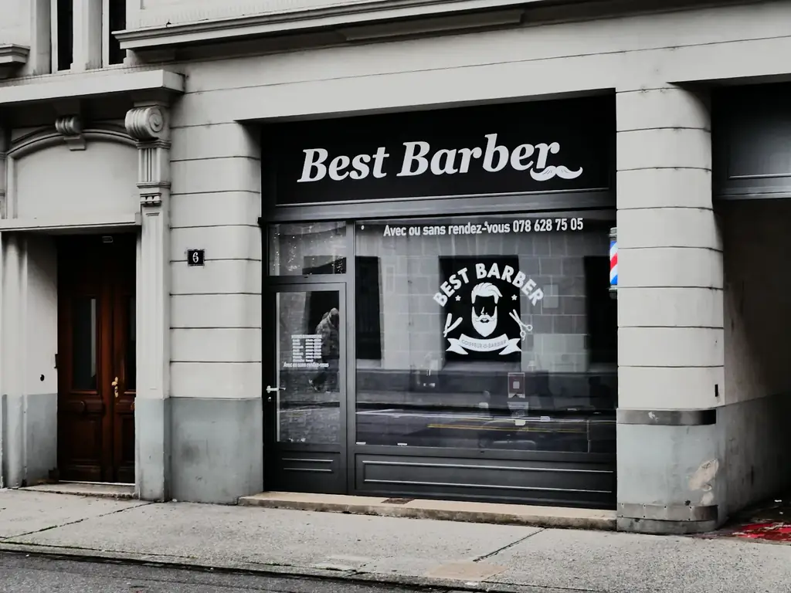

Quatre outils. Quatre frères.
Une affaire de famille où chacun a sa spécialité, et où le geste se transmet.
Le dégradé, au millimètre.
Contours nets, transitions invisibles, ciseaux maîtrisés. Vous ressortez avec exactement ce que vous vouliez.
01Services
Ce qu'on fait le mieux
Tarifs affichés au salon. Appelez si vous voulez un prix avant de venir.
02Réalisations
Le travail parle
Quelques coupes du salon, publiées par l'équipe et par les clients.





03Le salon
Une affaire de famille
Quatre frères, chacun sa spécialité. Beaucoup de clients viennent depuis cinq ou six ans pour l'écoute, la rapidité et un résultat impeccable à chaque passage.
- 4,9sur Google
- 224avis clients
- 6 j/7avec ou sans RDV
04Avis
Ils reviennent
« Client fidèle depuis 5 ans, toujours aussi satisfait. L'accueil est chaleureux, l'équipe est professionnelle et à l'écoute, et le résultat est impeccable à chaque passage. »
Simao« 6 ans que je suis client, toujours pros, aimables et efficaces. Coupe rapide et propre, ils s'adaptent à tous les styles pour un prix correct. »
Tkrz« Très professionnel, rapide, très efficace. Je suis chez eux depuis 5 ans, jamais déçu. Les meilleurs en qualité-prix. »
Pirate Plein
05Galerie
Dans le fauteuil





06Infos pratiques
Passez nous voir
Horaires
- Lundi – vendredi
- 9h – 19h
- Samedi
- 8h30 – 17h30
- Dimanche
- Fermé

Chemin du Closelet 61006 LausanneItinéraire · 5 min de la gare →